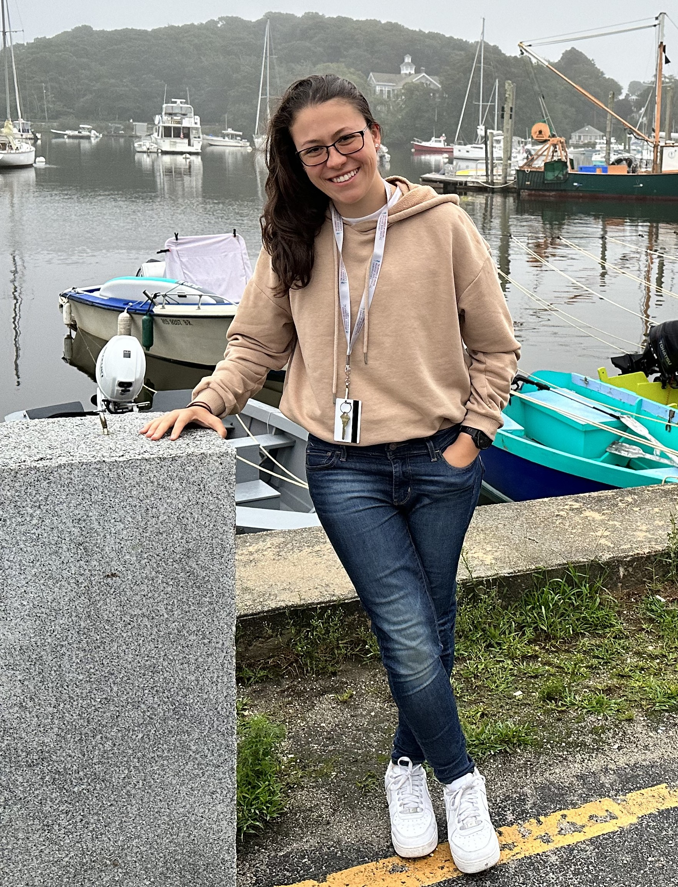

Florencia Martinez Addiego
Cognitive computational neuroscientist. Postdoctoral scholar. Always learning, mostly caffeinated.
Postdoctoral fellow at Georgia Tech bridging brains, minds, and machines to study face recognition

About
I am broadly interested in leveraging special populations, such as individuals with face blindness and people born without hands, to understand the neural mechanisms behind typical cognitive functions, how they are disrupted, and what this tells us about how the brain is organized. My work in Dr. Ratan Murty's lab, combines functional neuroimaging and computational models of the brain to study face recognition and face blindness.
I completed my PhD in Neuroscience and Cognitive Science at Georgetown University, co-mentored by Drs. Ella Striem-Amit and Maximilian Riesenhuber, where I used fMRI to study how the brain represents actions.
I am passionate about open science and science communication. I am open to academic and industry collaborations at the intersection of neuroscience and AI.